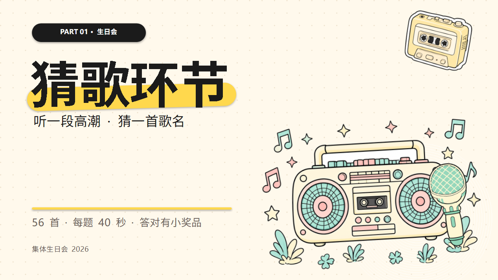
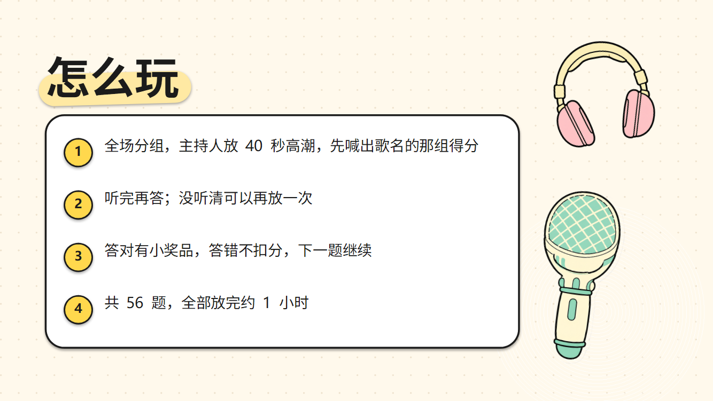
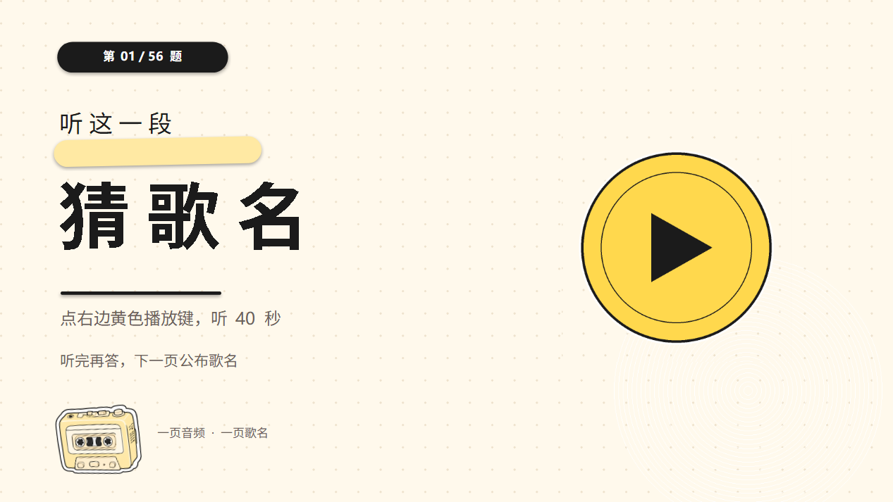

集体生日会 · 猜歌环节课件（56 首）
同学在需求收集页上提的：要一个猜歌环节，约 60 人一起玩，56 首歌，用高潮片段，音频一页、歌名一页交替，一小时左右。
做出来了。

里面是什么
- 115 页：封面 + 玩法 + 56 组（音频页 / 歌名页）+ 结束页
- 每题 40 秒高潮片段，音频内嵌在课件里，点播放键就响，不用带音频文件
- 一页放音频、一页放歌名，答完按
→翻页 - 56 首歌全部过了一遍来源核对，见下面清单

长什么样
奶油底 + 墨黑大字 + 黄色荧光笔，插画是生成的贴纸。投影上够清楚。

怎么拿
- 课件：本地有
猜歌环节-课件-奶油版.pptx（31 MB） - 网页版（不用装 Office，平板/手机直接放）：猜歌网页版
曲目
按要求全部放入，从《梦哑》《雀跃》到《青花瓷》《红尘客栈》，再到《悬溺》《隔岸》那批，核对清单里 56 条逐条写了来源。